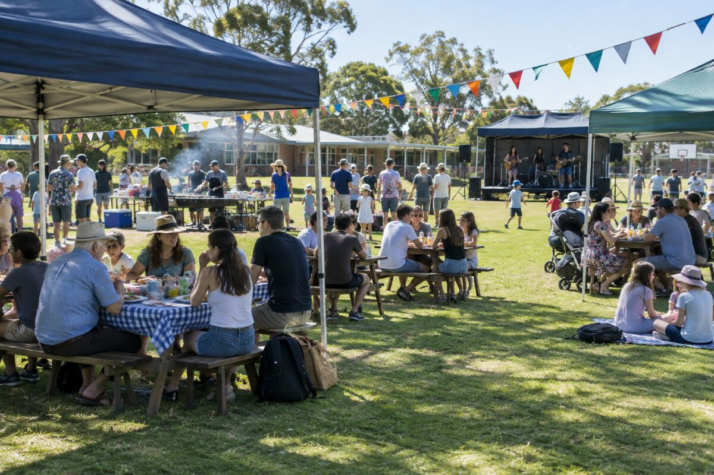
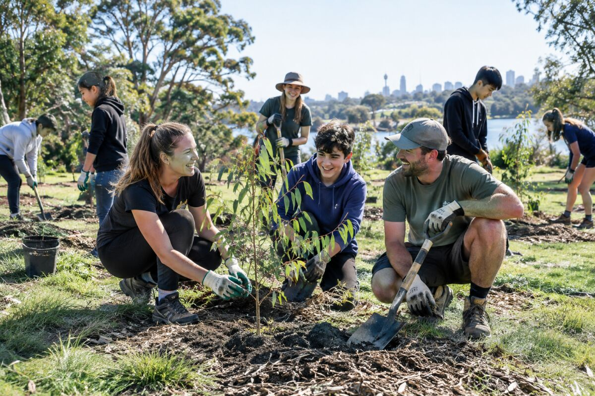
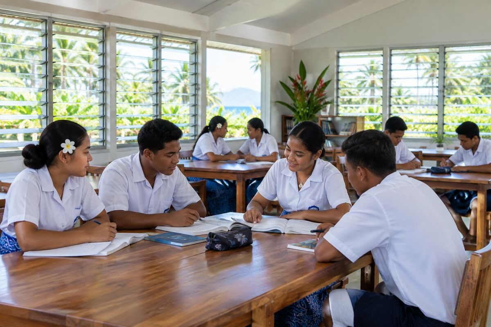
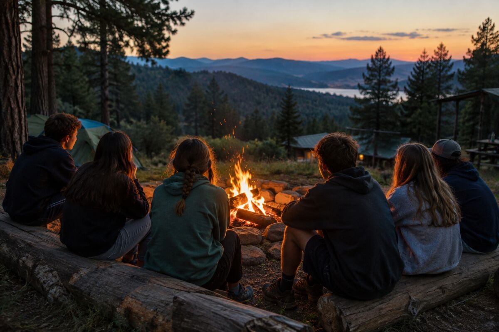
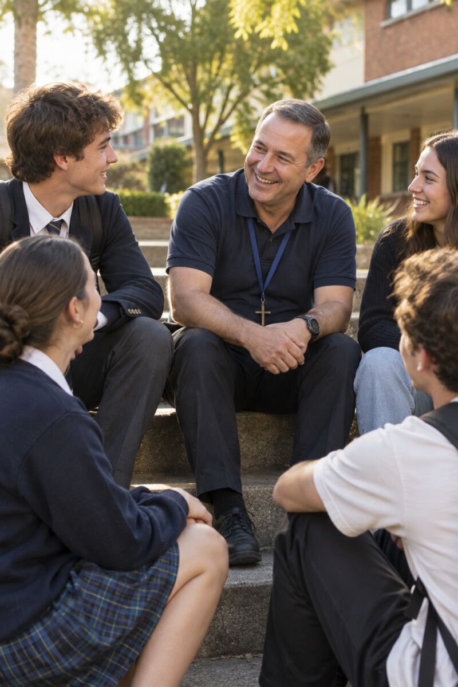

Upcoming event— days to go
Sun
06
DEC 2026Salesian Family Day 2026
A day of food, games, music and Mass for the whole Salesian family: students, parents, past pupils and friends.
00Days
00Hours
00Mins
00Secs

Salesians of Don Bosco · Australia–Pacific
Inspired by Don Bosco, we build places of welcome, faith, learning and joy for young people, especially those who are poor or on the margins, across Australia, Samoa, Fiji and New Zealand.
Photo: [Photographer] · [Ministry / event] · © Salesians of Don Bosco [wording TBC]
One province, many places
Rooted locally. Connected across Asia-Pacific.
Sun
A day of food, games, music and Mass for the whole Salesian family: students, parents, past pupils and friends.

Explore
Practical mission work with young people across Asia and the Pacific.
Formation, accompaniment and belonging for young people.
Stay connected to Salesian life across East Asia–Oceania.
Shared tools, formation and resources for our communities.
From the Salesian family

SpiritualityDon Bosco’s approach brings reason, faith and loving-kindness into everyday life.

Don BoscoThe work that began in Turin continues through schools, parishes and missions.

RegionAustralia, Samoa, Fiji and New Zealand belong to a wider Salesian movement.
Digital Bulletin
Stories of faith, friendship and service from Salesian communities across Australia and the Pacific. Read the Spring issue online, or explore every past edition in the library.
Support the mission
Your support makes belonging, formation and practical care possible, through a gift today or a lasting bequest.
A child-safe province
The Salesians are committed to child-safe and child-friendly environments, with zero tolerance for abuse and a focus on children’s best interests.
Our commitment
Every child and young person in our care has the right to be safe, heard and respected. Here you can understand our commitment, find the policy, and know exactly what to do if you are worried.
Need to report or ask for help?
If a child is in immediate danger, call 000 (Police, Fire, Ambulance) straight away.
Contact our Safeguarding Office in confidence. [Phone / email to confirm]
Kids Helpline 1800 55 1800: free, confidential, 24/7 for young people.
Safety policy + resources
The policy, code of conduct, training and responsibilities for everyone in our communities: staff, volunteers, families and young people.
Understand
Get help
Take action
Photo: [credit TBC]
Keep exploring trust and support
Understand giving and bequest supportSee the ministries working with young peopleGiving + bequests
Your support helps create safe spaces, practical opportunities and a future of hope for young people across the Salesian mission.
Photo: [credit TBC]
Make a gift
Choose a one-off gift, regular giving, community fundraising or a lasting bequest.
Ways to give
Where your gift goes
Support helps fund safe communities, formation, practical care and opportunities for young people to grow.
FAQ + support
Still have a question?[Giving office phone — TBC][Giving email — TBC]
Explore the wider mission
See the ministries and works a gift can supportRead the child safety commitmentResource + bulletin library
Discover episodes, bulletins, prayer and formation resources, see who each one is for, and move straight into related ministry and story content.
The Salesian
PodcastFeatured episode · Ep 12
Reason, faith and loving-kindness: what Don Bosco’s approach looks like in a classroom, a camp and a youth centre in 2026.
Resource results
PDF · 24 pages
Open resourceSession plan
Open resourceReflection pack
Open resourceGuide · 18 pages
Open resourceNo resources match those filters. Try clearing the search or choosing “All”.
Need a hand?
Tell us what you’re looking for and our youth ministry team will point you in the right direction.
Keep exploring related content
Explore Cagliero Youth Ministry and Salesian MissionsRead the latest Salesian storyNews + formation · 18 Aug 2026
How a real story connects history, people and the continuing Salesian mission in Australia and across the Pacific.
Photo: [Photographer name] · [Ministry / event] · © Salesians of Don Bosco Australia–Pacific [credit & attribution wording TBC, pending image policy]
Don Bosco’s story is not only about one priest in nineteenth-century Turin. It is about a way of being with young people: close enough to listen, practical enough to help, and hopeful enough to see what they can become. That spirit continues to shape the Salesian family in Australia and across the Pacific.
John Bosco was born in 1815 in the hills of Piedmont. As a young priest in Turin he met boys who had come to the city looking for work and found themselves alone, unemployed or in prison. He began gathering them on Sundays for games, lessons and prayer: the beginning of the oratory.
“It is not enough to love the young; they must know that they are loved.”St John Bosco, 1884
Don Bosco called his approach the Preventive System. Rather than punishment, it relies on presence: adults who walk alongside young people, earn their trust and help them grow. In 1859 he founded the Salesian Society so the work could continue beyond his own lifetime.
Today that spirit lives on in Salesian schools, parishes, youth centres and missions across Australia, Samoa, Fiji and New Zealand, wherever adults choose to be a home, a school, a playground and a parish for young people.
Keep reading
Three days of games, prayer and new friendships.

Community storyA life given to young people as a Salesian brother.
Keep exploring the news
News, reflections and stories from Salesian communities across Australia and the Pacific.
Ministry / works
Cagliero gives young people, families and supporters a concrete way to understand the work, meet the people involved, and move into related Salesian Missions content.
At a glance
The youth ministry of the Salesians of Don Bosco in Australia–Pacific.
Young people aged 12–25 and the adults who walk with them.
Salesian schools, parishes and youth centres across the Province.
Join a group, come on camp, volunteer as a leader or partner with us.
Photo: [credit TBC]
Who it’s for
A young person lands here looking for community, formation or a way to serve. This page answers who Cagliero is for, what happens next, and where the wider Salesian mission connects.
Visit a ministry or work
Every Salesian work has its own home online. Start here, then step through to the full site.
Keep exploring related works
Video placeholder
Our story
The Province’s video (YouTube / Vimeo embed) plays here with captions on.